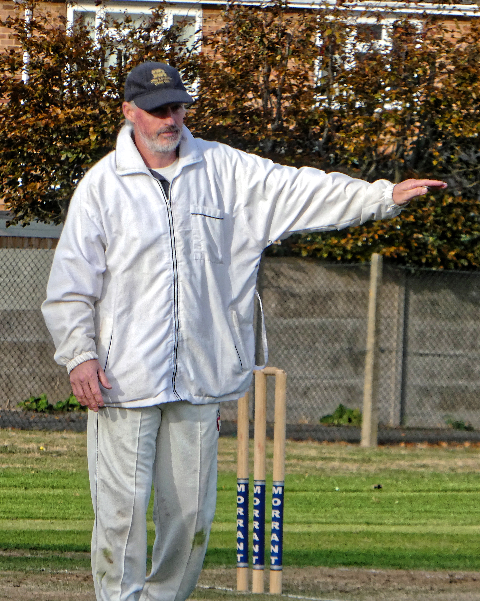

The 95% Perfection Paradox
If a batter plays a loose shot outside the off-stump and gets caught at slip for a duck, the crowd groans, the commentators offer some light criticism, and the game moves on. If a bowler delivers a waist-high full toss that gets dispatched into the second tier of the stadium, the captain shakes his head, sets the field again, and the game moves on.
But if an umpire makes a mistake? The entire stadium erupts in hostility. Social media platforms demand their immediate firing. Former players write scathing columns questioning their competence. The match gets paused for five minutes while slow-motion replays and ball-tracking algorithms dissect their human error from twelve different camera angles in super high-definition.
What nobody talks about is that modern elite umpires operate at an accuracy rate of over 95%. Think about that. They get it right 95 times out of 100 with the naked eye. But nobody remembers the 95 brilliant decisions. They only remember the 5 times the DRS (Decision Review System) overturned them. Umpiring is a profession where absolute perfection is the baseline expectation, and anything less is considered a catastrophic failure.
The Terror of High-Definition Technology

There was a time when the umpire was the undisputed king of the cricket field. Their raised index finger was final. If you argued, you were fined. If you dissented, you were banned.
Today, the umpire is just a highly stressed middleman waiting to be corrected by a computer. Imagine doing your job while 50,000 people scream at you, knowing that if you make a miscalculation by literally two millimeters, a giant screen will immediately broadcast your failure to the world.
Consider the mechanics of an LBW decision. A ball delivered by Jasprit Bumrah is traveling at 145kmph. The umpire has roughly 0.4 seconds to calculate: Did the ball pitch in line? Did it hit the pad before the bat? What is the trajectory? How much is it bouncing? Is it swinging or seaming? And finally, is it going to hit the stumps?
The umpire processes all of this with their naked eye and says "Not Out." Then comes the review. The giant screen shows the ball clipping the outside of the off-stump by a millimeter. The red light flashes. The crowd boos loudly. The commentators say, "Oh, that's a poor decision from the umpire." The sheer humiliation of being proven wrong publicly, repeatedly, takes a massive psychological toll.
A Day in the Life: Six Hours of Absolute Focus
While players get to rotate in and out of the action, the umpire has nowhere to hide. During a Test match, an umpire stands on their feet for six hours a day, five days in a row. They don't get to sit in the shade of the dugout when their team is batting. They don't get to rest at the boundary rope. They must remain hyper-focused on every single delivery.
Concentration fatigue is a massive issue. Watching a small red ball hurtling down a pitch 90 times an hour in 40-degree Celsius heat drains the mind. A momentary lapse in concentration—a split-second daydream about lunch or a distraction from the crowd—can lead to missing a faint edge. In a profession where one mistake dominates the headlines, umpires endure levels of mental fatigue that are rarely acknowledged.
The Psychological Abuse from Players and Crowds

Cricket prides itself on being the "gentleman's game," but the reality on the field is often highly intimidating. When a fast bowler runs in, bowls a beautiful delivery that beats the bat, and turns around to scream an appeal at the top of their lungs, accompanied by eleven fielders jumping in unison, the psychological pressure on the umpire is immense.
Superstar players know exactly how to leverage their status. A glare from Virat Kohli, an exasperated sigh from Stuart Broad, or a sarcastic comment from a wicket-keeper can influence an umpire's subconscious. Furthermore, the crowd is never neutral. When an Indian umpire officiates a domestic match in Mumbai and turns down an LBW appeal for the home team, the subsequent abuse from the stands is deafening and personal.
The Steve Bucknor Syndrome
Nothing illustrates the danger of the job better than the infamous 2008 Sydney Test between India and Australia. Elite umpire Steve Bucknor made a series of high-profile, catastrophic errors that favored the home side. The backlash was nuclear. Effigies were burned, diplomatic relations between the cricket boards were strained, and Bucknor's illustrious career was effectively destroyed overnight.
Every modern umpire lives in fear of having a "Sydney moment." A bad day at the office for a batter means a low score. A bad day at the office for an umpire can mean the end of their career, relentless public mockery, and threats to their personal safety.
Why Do They Do It?
Given the stress, the abuse, and the demand for robotic perfection, why does anyone choose to become a cricket umpire? The answer is a profound, almost obsessive love for the game. Many umpires are former cricketers whose playing careers were cut short, but who desperately wanted to remain in the middle of the action.
Umpiring offers the best seat in the house. You get to stand 22 yards away and watch Jasprit Bumrah bowl a perfect yorker. You get to hear the exact sound of Virat Kohli's bat hitting the ball perfectly in the sweet spot. You are physically closer to the magic than any spectator or commentator will ever be.
The next time you see an umpire standing in the blazing sun, dealing with angry fast bowlers and screaming crowds, remember: They are the only people on the field expected to be completely flawless, with absolutely zero reward for being perfect.
Frequently Asked Questions
How much do elite cricket umpires earn?
ICC Elite Panel Umpires earn an annual base salary ranging from $35,000 to $45,000, plus substantial match fees for every Test, ODI, and T20 they officiate. Top umpires can earn well over $100,000 annually, not including lucrative domestic league contracts like the IPL.
Why is the Umpire's Call rule so controversial in DRS?
Umpire's Call exists because ball-tracking technology has a small margin of error. If the ball is only slightly clipping the stumps, the technology defers to the human umpire's original on-field decision rather than overturning it, to account for predictive inaccuracies.
Can umpires be fined or fired for bad decisions?
While they aren't 'fined' directly for mistakes, elite umpires undergo rigorous performance reviews after every match. If their accuracy drops below the Elite Panel standard, they are demoted, which results in a massive loss of income and prestige.
Do umpires get breaks during a match?
Umpires stand on the field for almost the entire duration of the match. Their only breaks are during formal intervals like drinks, lunch, tea, and innings breaks. They cannot leave the field otherwise without an emergency replacement.
Why do umpires stand at square leg?
The square leg umpire is primarily responsible for adjudicating stumpings, run-outs at the striker's end, short-pitched bowling height (bouncers), and assisting the main standing umpire with checking clean catches and boundary ropes.
Who is considered the greatest cricket umpire of all time?
Simon Taufel from Australia and Dickie Bird from England are widely regarded by players, pundits, and fans as two of the greatest and most respected umpires in cricket history.